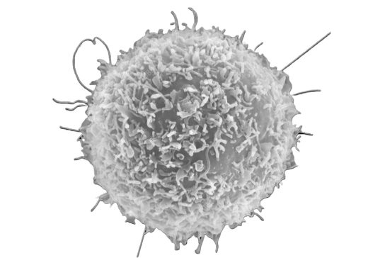
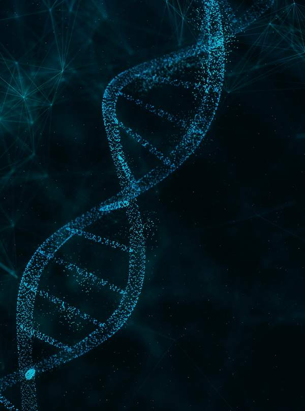

Estrella is developing EB103, a CD19-directed ARTEMIS T-cell therapy, in STARLIGHT-1, a Phase I/II trial in relapsed or refractory B-cell non-Hodgkin lymphoma. EB103 is investigational and not FDA-approved.
80,350
Est. U.S. NHL cases, 2025 (NCI)
5
Sites the company lists as active, Oct 15

Open-label Phase I/II of EB103 in relapsed or refractory B-cell non-Hodgkin lymphoma. Company-reported, small, and not predictive of later results.
9
Phase I patients: 3 at 2.5M and 6 at 5M T cells/kg
5 of 5
Evaluable at the higher dose had a complete response at Month 1. A sixth patient there died of sepsis (investigator: unrelated) and was not evaluable.
11
Patients dosed by Jun 30, 2026: 9 in Phase I, 2 in Phase II (10-Q)

No revenue. The 10-Q states substantial doubt about the company’s ability to continue as a going concern; more funding is needed.
$0.15M
Cash, Jun 30, 2026 (unaudited)
$9.3M
Liabilities, $8.3M accrued to related parties
2
Open Nasdaq listing notices
EB103 is investigational, not FDA-approved. No revenue. The company’s filings state substantial doubt about its ability to continue as a going concern; it needs more funding, and new equity would dilute holders. Two Nasdaq listing notices are open. Parent Eureka controls (~58.7%). Forward-looking: trial results and timing, approval, financing, listing. Phase I data are company-reported, small, open-label. Figures: Jun 30, 2026, unaudited.